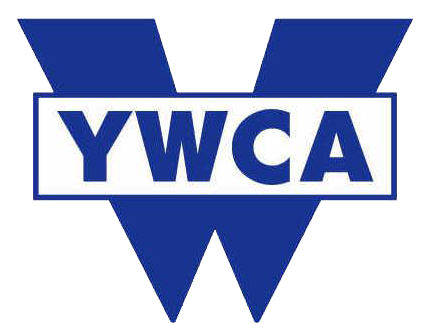

(사)울산YWCA
국민취업지원제도
🕒 1분 진단으로 알아보는
나에게 맞는
취업지원
유형 찾기
간단한 질문으로 나의 취업준비 상태와 받을 수 있는 지원을 확인해보세요!
✅
간단한 12문항1분이면 충분해요📊
나의 취업 유형 확인맞춤형 결과 제공👥
지원 제도 연계1유형 / 2유형 간이진단🔒 본 진단은 간이진단이며, 정확한 참여 여부는 상담을 통해 확인됩니다.
🕒 1분 진단
Q1.
가장 잘 맞는 항목을 선택해주세요.
↑ 질문에 답변을 선택해주세요
✅ 진단 완료
🎉 진단이 완료되었습니다!
당신의 결과를 확인해보세요.
나의 취업준비 유형
성장형
취업을 위해 꾸준히 준비하고 있으며, 실질적인 역량 강화가 필요한 단계입니다.
국민취업지원제도 간이진단 결과
2유형 가능성 높음
입력하신 내용을 기준으로 국민취업지원제도 참여 가능성을 확인할 수 있습니다.
※ 본 결과는 간이진단 결과이며, 정확한 참여 여부는 상담을 통해 확인됩니다.
☆ 추천 지원 서비스
💬취업상담
📖취업역량강화
🎓직업훈련 연계
👤일경험 지원